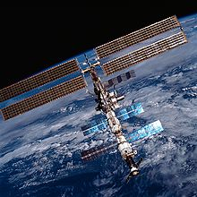
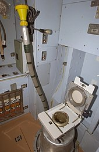
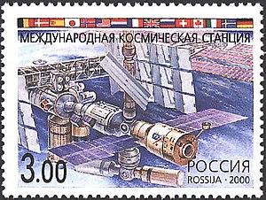
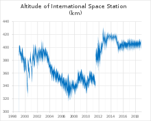
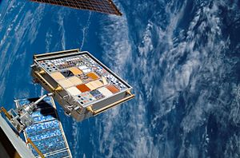
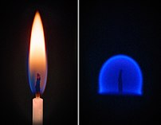
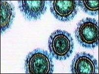
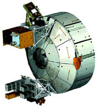

Междунаро́дная косми́ческая ста́нция, сокр. МКС (англ. International Space Station, сокр. ISS) — пилотируемая орбитальная станция, используемая как многоцелевой космический исследовательский комплекс; эксплуатируется с конца 1998 года по настоящее время (странами согласована эксплуатация по 2024 год включительно, рассматривается продление срока работы до 2028, 2030 года). МКС — совместный международный проект, в котором участвуют 14 стран: Россия, США, Япония, Канада и входящие в Европейское космическое агентство Бельгия, Германия, Дания, Испания, Италия, Нидерланды, Норвегия, Франция, Швейцария, Швеция[10][11][12] (первоначально в составе участников были Бразилия[комм. 1] и Великобритания[комм. 2]). МКС внесена в Книгу рекордов Гиннесса как самый дорогой объект построенный человеком[13]. Общая стоимость станции составляет более 100 миллиардов долларов. Управление МКС осуществляется: российским сегментом — из Центра управления космическими полётами в Королёве, американским сегментом — из Центра управления полётами имени Линдона Джонсона в Хьюстоне. Управление лабораторных модулей — европейского «Коламбус» и японского «Кибо» — контролируют Центры управления Европейского космического агентства (Оберпфаффенхофен, Германия) и Японского агентства аэрокосмических исследований (г. Цукуба)[14]. Между Центрами идёт постоянный обмен информацией.
В 1984 году Президент США Рональд Рейган объявил о начале работ по созданию международной орбитальной станции[15]; в 1988 году проектируемая станция была названа «Freedom» («Свобода»). В то время это был совместный проект США, ЕКА, Канады и Японии. Планировалась крупногабаритная управляемая станция, модули которой будут доставляться по очереди на орбиту кораблями «Спейс шаттл» с 1981 года. Но к началу 1990-х годов выяснилось, что стоимость разработки проекта слишком велика и было принято решение создать станцию совместно с Россией[16]. Россия, унаследовавшая от СССР опыт создания и выведения на орбиту орбитальных станций «Салют» (1971—1991), а также станции «Мир» (1986—2001), планировала в начале 1990-х создание станции «Мир-2», но в связи с экономическими трудностями проект был приостановлен. 17 июня 1992 года Россия и США заключили соглашение о сотрудничестве в исследовании космоса. В соответствии с ним Российское космическое агентство (РКА) и НАСА разработали совместную программу «Мир — Шаттл». Эта программа предусматривала полёты американских многоразовых кораблей «Спейс шаттл» к российской космической станции «Мир», включение российских космонавтов в экипажи американских шаттлов и американских астронавтов — в экипажи кораблей «Союз» и станции «Мир». В ходе реализации программы «Мир — Шаттл» родилась идея объединения национальных программ создания орбитальных станций. В марте 1993 года генеральный директор РКА Юрий Коптев и генеральный конструктор НПО «Энергия» Юрий Семёнов предложили руководителю НАСА Дэниелу Голдину создать Международную космическую станцию. При этом в 1993 году в США многие политики были против строительства космической орбитальной станции — в июне 1993 в Конгрессе США обсуждалось предложение об отказе от создания Международной космической станции; это предложение не было принято с перевесом только в один голос: 215 голосов за отказ, 216 голосов за строительство станции. 2 сентября 1993 года вице-президент США Альберт Гор и председатель Совета министров России Виктор Черномырдин объявили о новом проекте «подлинно международной космической станции». С этого момента официальным названием станции стало «Международная космическая станция»[16], хотя параллельно использовалось и неофициальное — космическая станция «Альфа»[17]. 1 ноября 1993 РКА и НАСА подписали «Детальный план работ по Международной космической станции». МКС, июль 1999 года. Вверху модуль «Юнити», внизу, с развёрнутыми панелями солнечных батарей — «Заря» МКС, июль 2000 года. Пристыкованные модули сверху вниз: «Юнити», «Заря», «Звезда» и корабль «Прогресс» МКС, апрель 2002 года МКС, август 2005 года МКС, сентябрь 2006 года МКС, август 2007 года МКС, июнь 2008 года МКС, март 2011 года 23 июня 1994 года Ю. Коптев и Д. Голдин подписали в Вашингтоне «Временное соглашение по проведению работ, ведущих к российскому партнёрству в Постоянной пилотируемой гражданской космической станции», в рамках которого Россия официально подключилась к работам над МКС[18]. В ноябре 1994 в Москве состоялись первые консультации российского и американского космических агентств; были заключены контракты с фирмами-участницами проекта — «Боинг» и РКК «Энергия». В марте 1995 года в Космическом центре им. Л. Джонсона в Хьюстоне был утверждён эскизный проект станции. В 1996 году была утверждена конфигурация станции, состоящая из двух сегментов — российского (модернизированный вариант «Мир-2») и американского (с участием Канады, Японии, Италии, стран — членов Европейского космического агентства и Бразилии).
20 ноября 1998 года был выведен на орбиту первый элемент МКС — функционально-грузовой блок «Заря», который был построен в России по заказу и за деньги НАСА. Запуск был произведён при помощи Российской ракеты «Протон-К» (ФГБ) Модуль входит в состав Российского сегмента МКС, в тоже время является собственностью НАСА. 7 декабря 1998 года шаттл «Индевор» пристыковал к модулю «Заря» американский модуль «Юнити». 10 декабря 1998 года был открыт люк в модуль «Юнити», и Роберт Кабана и Сергей Крикалёв, как представители США и России, вошли внутрь станции. 26 июля 2000 года к функционально-грузовому блоку «Заря» был пристыкован служебный модуль (СМ) «Звезда». 2 ноября 2000 года транспортный пилотируемый корабль (ТПК) «Союз ТМ-31» доставил на борт МКС экипаж первой основной экспедиции. 7 февраля 2001 года экипажем шаттла «Атлантис» в ходе миссии STS-98 к модулю «Юнити» присоединён американский научный модуль «Дестини». 18 апреля 2005 года глава НАСА Майкл Гриффин на слушаниях сенатской комиссии по космосу и науке заявил о необходимости временного сокращения научных исследований на американском сегменте станции. Это требовалось для высвобождения средств на форсированную разработку и постройку нового пилотируемого корабля (CEV). Новый пилотируемый корабль был необходим для обеспечения независимого доступа США к станции, поскольку после катастрофы «Колумбии» 1 февраля 2003 года США временно не имели такого доступа к станции до июля 2005 года, когда возобновились полёты шаттлов. После катастрофы «Колумбии» количество членов долговременных экипажей МКС было сокращено с трёх до двух. Это было связано с тем, что снабжение станции материалами, необходимыми для жизнедеятельности экипажа, осуществлялось только российскими грузовыми кораблями «Прогресс» и его грузоподьемности было недостаточно для полноценного снабжения астронавтов. 26 июля 2005 года полёты шаттлов возобновились успешным стартом шаттла «Дискавери». До планируемого конца эксплуатации шаттлов (2010 год) предусматривалось совершить 17 полётов. В ходе этих полётов на МКС было доставлено оборудование и модули, необходимые как для достройки станции, так и для модернизации части оборудования, в частности — канадского манипулятора. Второй полёт шаттла после катастрофы «Колумбии» (Шаттл «Дискавери» STS-121) состоялся в июле 2006 года. На этом шаттле на МКС прибыл немецкий космонавт Томас Райтер, который присоединился к экипажу долговременной экспедиции МКС-13. Таким образом, в долговременной экспедиции на МКС после трёхлетнего перерыва вновь стали работать три космонавта. Стартовавший 9 сентября 2006 года челнок «Атлантис» доставил на МКС два сегмента ферменных конструкций МКС, две панели солнечных батарей, а также радиаторы системы терморегулирования американского сегмента. 23 октября 2007 года на борту шаттла «Дискавери» прибыл американский модуль «Гармония», его временно пристыковали к модулю «Юнити». После перестыковки 14 ноября 2007 года модуль «Гармония» был на постоянной основе соединён с модулем «Дестини». Построение основного американского сегмента МКС завершилось. В 2008 году станция увеличилась на две лаборатории: 11 февраля был пристыкован модуль «Коламбус», созданный по заказу Европейского космического агентства, а 14 марта и 4 июня были пристыкованы два из трёх основных отсеков лабораторного модуля «Кибо», разработанного Японским агентством аэрокосмических исследований — герметичная секция «Экспериментального грузового отсека» (ELM PS) и герметичный отсек (PM). В 2008—2009 гг. начата эксплуатация новых транспортных кораблей: «ATV» (Европейское космическое агентство, первый запуск состоялся 9 марта 2008 года, полезный груз — 7,7 тонны, один полёт в год) и «H-II Transport Vehicle» (Японское агентство аэрокосмических исследований; первый запуск состоялся 10 сентября 2009 года, полезный груз — 6 тонн, один полёт в год). С 29 мая 2009 года начал работу долговременный экипаж МКС-20 численностью шесть человек, доставленный в два приёма: первые три человека прибыли на «Союз ТМА-14», затем к ним присоединился экипаж «Союз ТМА-15»[19]. В немалой степени увеличение экипажа произошло благодаря тому, что увеличились возможности доставки грузов на станцию. 12 ноября 2009 года к станции пристыкован малый исследовательский модуль МИМ-2, разработанный на базе стыковочного узла «Пирс» и незадолго до запуска получивший название «Поиск». Это был четвёртый модуль российского сегмента станции. Возможности модуля позволяют производить на нём некоторые научные эксперименты[20], а также одновременно выполнять функцию причала для российских кораблей[21]. 18 мая 2010 года к МКС был успешно пристыкован российский малый исследовательский модуль «Рассвет» (МИМ-1). Операция по пристыковке «Рассвета» к российскому функционально-грузовому блоку «Заря» была осуществлена манипулятором американского космического челнока «Атлантис», а затем манипулятором МКС[22][23]. 16 апреля 2016 года к МКС (к модулю «Транквилити») был пристыкован модуль BEAM, разработанный частной космической компанией Bigelow Aerospace, — первый модуль МКС, разработанный частной фирмой[24]. Модуль используется для проведения экспериментов по измерению уровня радиации и воздействия микрочастиц[25]. 26 июля 2021 года в 10:56 UTC от МКС был отстыкован модуль Пирс. 29 июля 2021 года в 16:30 по московскому времени Роскосмос успешно произвел стыковку многоцелевого лабораторного модуля (МЛМ) «Наука» с российским сегментом МКС. После стыковки двигатели модуля "Наука" незапланированно включились, что привело к вращению МКС в трех плоскостях и приостановке большинства наблюдений за космосом из-за смены ориентации МКС. 30 июля 2021 года ориентация МКС восстановлена [26][27].
На российском модуле МКС установят научный комплекс «Мониторинг всего неба» для создания уточнённой карты всего звёздного неба. Комплекс будет составлять карту расположения всех объектов на небесной сфере в течение трёх лет[47]. В 2024 году американская компания Axiom Space планирует пристыковать к модулю «Гармония» первый коммерческий модуль, а к нему — два других, и использовать их для космического туризма (рассматриваются и варианты с бо́льшим числом модулей). После закрытия проекта МКС сегмент Аксиом планируется дооснастить независимой СЖО, отстыковать, и использовать как коммерческую орбитальную станцию.
В случае принятия решения об окончании эксплуатации станции планируется сведение её с орбиты. В данное время согласовано финансирование и эксплуатация МКС по 2024 год включительно, рассматривается дальнейший цикл продления до 2028 (2030) года. Станцию, как и другие космические объекты, должны затопить в Тихом океане, выбрав для этого несудоходный район. По предварительным оценкам, несгоревшими останутся около 120 тонн обломков при общей массе космической станции более 400 тонн. Траектория снижения МКС с высоты 400 км состоит из нескольких этапов. Когда она достигнет 270-километровой орбиты, время снижения до поверхности Земли займёт примерно месяц. Разделение станции порционно на высотах в 110, 105 и 75 километров позволит расширить зону падения обломков до 6 тысяч километров. Какие установки будут задействованы для ликвидации МКС, пока не определено, рассматриваются варианты с двигателями модуля «Звезда» либо комбинацией нескольких «Прогрессов»[48]. Рассматривались предложения отделения в 2024 году от МКС российского сегмента из трёх модулей («лабораторный модуль», узловой модуль, «научно-энергетический модуль») и создание на их базе национальной космической станции.[49]
На декабрь 2021 года станция имеет 12 стыковочных узлов: 8 для приёма грузовых и пилотируемых космических кораблей и 4 для пристыковки в будущем новых модулей:
Крупнейшим оптическим шлюзом станции является созданный в Италии 7-сегментный модуль Купол американского сегмента, диаметром 2955 мм[51]. Второй купол планируется установить в сегменте Аксиом. Кроме того, в станции имеется несколько небольших иллюминаторов.
В основу устройства станции заложен модульный принцип. Сборка МКС происходит путём последовательного добавления к комплексу очередного модуля или блока, который соединяется с уже доставленным на орбиту. На декабрь 2021 года в состав МКС входит 15 основных модулей (российские — «Заря», «Звезда», «Поиск», «Рассвет», «Наука», «Причал»; американские — «Юнити», «Дестини», «Квест», «Гармония», «Транквилити», «Купола», «Леонардо»; европейский «Коламбус»; японский «Кибо», состоящий из двух частей) а также экспериментальный модуль «BEAM»[52] и шлюзовой модуль для запуска малых спутников «Бишоп». На схеме изображены все основные и второстепенные модули, которые являются частью станции (закрашенные) или планируются для доставки (незакрашенные):
Расположение модулей относительно друг друга часто меняется. На схеме показано их текущее расположение. Синим цветом показаны герметичные части станции и пристыкованные к ней корабли. Забортные конструкции показаны жёлтым и красным цветом. Сверху на схеме — кормовая часть станции. Слева находится зенит, справа — надир (направление к Земле). На схеме изображены:
Единственным источником электрической энергии для МКС является Солнце, свет которого солнечные батареи станции преобразуют в электроэнергию[63]. В российском сегменте МКС используется постоянное напряжение 28 вольт[64][65], аналогичное применяемому на космических кораблях «Спейс Шаттл»[66] и «Союз»[67]. Электроэнергия вырабатывается непосредственно солнечными батареями модулей «Заря» и «Звезда», а также передаётся с американского сегмента в российский через преобразователь напряжения ARCU (American-to-Russian converter unit) и в обратном направлении через преобразователь напряжения RACU (Russian-to-American converter unit)[68][69]. При разработке проекта станции планировалось, что российский сегмент станции будет обеспечиваться электроэнергией с помощью российского модуля «Научно-энергетическая платформа» (НЭП), но в 2001 году её создание было остановлено из-за нехватки средств, в то же время планировалась её доставка на МКС американским шаттлом в конце 2004 года.[70][71] После катастрофы шаттла «Колумбия» в 2003 году программа сборки станции и график полётов шаттлов были пересмотрены. Среди прочего, отказались от доставки НЭП, американская сторона предложила подачу электроэнергии со своего сегмента в российский сегмент; поэтому в данный момент большая часть электроэнергии производится солнечными батареями американского сектора[63][72]. В американском сегменте солнечные батареи организованы следующим образом: две гибкие складные панели солнечных батарей образуют так называемое крыло солнечной батареи (Solar Array Wing, SAW), всего на ферменных конструкциях станции размещено четыре пары таких крыльев. Каждое крыло имеет длину 35 м и ширину 11,6 м, а его полезная площадь составляет 298 м², при этом вырабатываемая им суммарная мощность может достигать 32,8 кВт[63][73]. Солнечные батареи генерируют первичное постоянное напряжение от 115 до 173 вольт, которое затем с помощью блоков DDCU (англ. Direct Current to Direct Current Converter Unit) трансформируется во вторичное стабилизированное постоянное напряжение величиной 124 вольта. Это стабилизированное напряжение непосредственно используется для питания электрооборудования американского сегмента станции[74]. Станция совершает один оборот вокруг Земли примерно за 90 минут (исходя из последних TLE данных станции 29.05.2021 1:42:19 [75][76][77] на 29 мая 2021 за 92,32 минуты, то есть за 1 час 32 минуты 58 секунд) и около половины этого времени проводит в тени Земли, где солнечные батареи не работают. Тогда её электроснабжение происходит от буферных аккумуляторных батарей, которые восполняют заряд при выходе МКС из земной тени. Срок службы первоначальных никель-водородных аккумуляторных батарей 6,5 лет; ожидается, что за время жизни станции их будут неоднократно заменять[63][78]. Первая замена аккумуляторных батарей была осуществлена в ходе полёта шаттла «Индевор» STS-127 в июле 2009 года. Новый цикл замены был начат после доставки первой группы аккумуляторных батарей грузовым кораблём HTV Kounotori 6 в декабре 2016 года, вторая группа, не последняя, была доставлена в сентябре 2018 года HTV Kounotori 7. При нормальных условиях солнечные батареи американского сектора отслеживают Солнце, чтобы увеличить до максимума выработку энергии. Солнечные батареи наводятся на Солнце с помощью приводов «Альфа» и «Бета». На станции установлено два привода «Альфа», которые поворачивают вокруг продольной оси ферменных конструкций сразу несколько секций с расположенными на них солнечными батареями: первый привод поворачивает секции от P4 до P6, второй — от S4 до S6. Каждому крылу солнечной батареи соответствует свой привод «Бета», который обеспечивает вращение крыла относительно его продольной оси[63][79]. Когда МКС находится в тени Земли, солнечные батареи переводятся в режим Night Glider mode (англ.) («Режим ночного планирования»), при этом они поворачиваются краем по направлению движения, чтобы уменьшить сопротивление атмосферы, которая присутствует на высоте полёта станции[79]. 29 апреля 2019 года на Международной космической станции зафиксировали проблему в системе энергоснабжения. Как сообщило НАСА, команды работают над выявлением причины и восстановлением электропитания в системе, непосредственной причины для беспокойства за экипаж станции нет.[80]
Притяжение Земли на высоте орбиты станции составляет 88-90 % от притяжения на уровне моря[81]. Состояние невесомости обусловлено постоянным свободным падением МКС, которое, согласно принципу эквивалентности, равнозначно отсутствию притяжения. Однако состояние тел на станции несколько отличается от полной невесомости (и зачастую описывается как микрогравитация) из-за четырёх эффектов:
Все эти факторы создают квазистатические ускорения, достигающие значений 10−6 g, и высокочастотные колебания ускорения с амплитудой до 10−2 g[82][83].
На станции поддерживается атмосфера, близкая к земной[84]. Нормальное атмосферное давление на МКС — 101,3 килопаскаля, такое же, как на уровне моря на Земле. Атмосфера на МКС не совпадала с атмосферой, поддерживаемой в шаттлах, поэтому после пристыковки космического челнока происходило выравнивание давлений и состава газовой смеси по обе стороны шлюза[85]. Примерно с 1999 по 2004 годы в NASA существовал и разрабатывался проект IHM (Inflatable Habitation Module), в котором планировалось использование давления атмосферы на станции для развёртывания и создания рабочего объёма дополнительного обитаемого модуля. Корпус этого модуля предполагалось изготовить из кевларовой ткани с герметичной внутренней оболочкой из газонепроницаемого синтетического каучука. Однако в 2005 году по причине нерешённости большинства проблем, поставленных в проекте (в частности, проблемы защиты от частиц космического мусора), программа IHM была закрыта.
Передача телеметрии и обмен научными данными между станцией и центрами управления полётом осуществляется с помощью радиосвязи. Кроме того, средства радиосвязи используются во время операций по сближению и стыковке, их применяют для аудио- и видеосвязи между членами экипажа и с находящимися на Земле специалистами по управлению полётом, а также родными и близкими космонавтов. Таким образом, МКС оборудована внутренними и внешними многоцелевыми коммуникационными системами[86]. Российский сегмент МКС поддерживает связь с Землёй напрямую с помощью радиоантенны «Лира», установленной на модуле «Звезда»[87][88]. «Лира» даёт возможность использовать спутниковую систему ретрансляции данных «Луч»[87]. Эту систему использовали для связи со станцией «Мир», но в 1990-х годах она пришла в упадок и в настоящее время не применяется[87][89][90][91]. Для восстановления работоспособности системы в 2012 году был запущен «Луч-5А». В мае 2014 года на орбите действуют 3 спутника многофункциональной космической системы ретрансляции «Луч» — «Луч-5А», «Луч-5Б» и «Луч-5В». В 2014 году запланирована установка на российский сегмент станции специализированной абонентской аппаратуры[92][93][94]. Другая российская система связи, «Восход-М», обеспечивает телефонную связь между модулями «Звезда», «Заря», «Пирс», «Поиск» и американским сегментом, а также УКВ-радиосвязь с наземными центрами управления, используя для этого внешние антенны модуля «Звезда»[95][96]. В американском сегменте для связи в S-диапазоне (передача звука) и Ku-диапазоне (передача звука, видео, данных) применяются две отдельные системы, расположенные на ферменной конструкции Z1. Радиосигналы от этих систем передаются на американские геостационарные спутники TDRSS, что позволяет поддерживать практически непрерывный контакт с центром управления полётами в Хьюстоне[86][87][97]. Данные с «Канадарм2», европейского модуля «Коламбус» и японского «Кибо» перенаправляются через эти две системы связи, однако американскую систему передачи данных TDRSS со временем дополнят европейская спутниковая система (EDRS) и аналогичная японская[97][98]. Связь между модулями осуществляется по внутренней цифровой беспроводной сети[99]. Во время выходов в открытый космос космонавты используют УКВ-передатчик дециметрового диапазона. УКВ-радиосвязью также пользуются во время стыковки или расстыковки космические аппараты «Союз», «Прогресс», HTV, ATV и «Спейс шаттл» (правда, шаттлы применяли также передатчики S- и Ku-диапазонов посредством TDRSS). С её помощью эти космические корабли получают команды от центров управления полётом или от членов экипажа МКС[87]. Автоматические космические аппараты оборудованы собственными средствами связи. Так, корабли ATV используют во время сближения и стыковки специализированную систему Proximity Communication Equipment (PCE), оборудование которой располагается на ATV и на модуле «Звезда». Связь осуществляется через два полностью независимых радиоканала S-диапазона. PCE начинает функционировать, начиная с относительных дальностей около 30 километров, и отключается после стыковки ATV к МКС и перехода на взаимодействие по бортовой шине MIL-STD-1553. Для точного определения относительного положения ATV и МКС используется система установленных на ATV лазерных дальномеров, делающая возможной точную стыковку со станцией[100][101]. Станция оборудована примерно сотней портативных компьютеров ThinkPad от IBM и Lenovo, моделей A31 и T61P, работающих под управлением операционной системы Debian GNU/Linux[102]. Это обычные серийные компьютеры, которые, однако, были доработаны для применения в условиях МКС; в частности, в них переделаны разъёмы, система охлаждения, учтено используемое на станции бортовое напряжение 28 вольт, а также выполнены требования безопасности для работы в невесомости[103]. С января 2010 года на станции для американского[104] сегмента организован прямой доступ в Интернет[105]. Компьютеры на борту МКС соединены с помощью Wi-Fi в беспроводную сеть и связаны с Землёй на скорости 3 Мбит/c (МКС-Земля) и 10 Мбит/с (Земля-МКС), что сравнимо с домашним ADSL-подключением[106].
На МКС 3 санузла: европейского, американского и российского производства. Они находятся на модулях «Звезда» и «Транквиллити». Унитаз на ОС предназначен как для мужчин, так и для женщин, выглядит точно так же, как на Земле, но имеет ряд конструктивных особенностей. Унитаз снабжён фиксаторами для ног и держателями для бёдер, в него вмонтированы мощные воздушные насосы. Космонавт пристёгивается специальным пружинным креплением к сидению унитаза, затем включает мощный вентилятор и открывает всасывающее отверстие, куда воздушный поток уносит все отходы. Воздух из туалетов перед попаданием в жилые помещения обязательно фильтруется для очистки от бактерий и запаха[107]. В декабре 2020 года, кораблём Cygnus CRS NG-14 на станцию доставлен и установлен туалет американского производства — UWMS (Universal Waste Management System), который установлен в модуле «Транквиллити»[108]. С прибытием в 2021 году на станцию модуля «Наука», количество туалетов было доведено до четырёх.
На МКС используется среднее время по Гринвичу (GMT). Через каждые 16 восходов/закатов закрываются иллюминаторы станции, чтобы создать иллюзию ночного затемнения. Команда обычно просыпается в 7 часов утра (UTC), и обычно работает около 10 часов каждый будний день и около пяти часов — каждую субботу[109]. Во время визитов шаттлов экипаж МКС следовал Mission Elapsed Time (MET) — общему полётному времени шаттла, которое не было привязано к конкретному часовому поясу, а считалось исключительно от времени старта космического челнока[110][111]. Экипаж МКС заранее сдвигал время своего сна перед прибытием челнока и возвращался к прежнему режиму после его отбытия.
В меню на МКС с 10 августа 2015 года была официально включена свежая зелень (салат латук), выращенная в условиях микрогравитации на орбитальной плантации Veggie[112] Многие СМИ сообщали, что космонавты впервые попробовали собственно выращенную еду, но аналогичный эксперимент ранее был проведён на станции «Мир»[113][114].
Все долговременные экспедиции называются «МКС-N», где N — номер, который увеличивается на единицу после каждой экспедиции. Длительность экспедиции обычно составляет полгода. Началом экспедиции считается отбытие предыдущего экипажа. МКС со флагами стран-участниц проекта на почтовой марке России 2000 года из серии «Международное сотрудничество в космосе» (ЦФА [АО «Марка»] № 580) Долговременные экипажи нумеруются таким образом, что в названии экипажа присутствуют номера тех экспедиций, в которых они задействованы. Если экипаж работает в нескольких экспедициях, то название экипажа содержит номера этих экспедиций, разделённые косой чертой. Например: Экипаж МКС-44/45/46. Иногда прилетевшие одним кораблём на МКС члены экипажа могут пробыть на станции разное время и улетать на разных кораблях. По соглашению сторон, российский экипаж из трёх человек должен был постоянно работать в своём сегменте, четыре астронавта в американском сегменте делят время пропорционально вкладам в строительство станции: США — около 76 %, Япония — 13 %, ЕКА — 8 % и Канада — 3 %. МКС — это самый посещаемый орбитальный космический комплекс в истории космонавтики. Если не считать повторных посещений, то к 2017 году на МКС побывало 224 космонавта (на станции «Мир» — 104)[115]. 22 ноября 2010 года длительность непрерывного пребывания людей на борту МКС превысила 3641 день, тем самым был побит рекорд, принадлежащий станции «Мир»[116]. К февралю 2017 года на станции побывали 50 долговременных экспедиций, в составе которых работали 226 человек (из них 34 женщины) из 18 стран мира: 46 российских космонавтов, 142 американских астронавта, 17 европейских, 8 японских, 7 канадских, по одному из ЮАР, Бразилии, Малайзии, Южной Кореи, Казахстана и Великобритании, а также 7 космических туристов, причём один турист (Чарльз Симони) посетил станцию дважды.
МКС рассчитана на работу на орбитах с высотой от 270 до 500 км. Это диктуется несколькими причинами:
Чем ниже высота орбиты, тем больше торможение об атмосферу и тем чаще необходимо проводить коррекцию повышения орбиты. Это требует дополнительных затрат топлива. По этому фактору высоту орбиты стараются сделать как можно более высокой и не опускают ниже 270 км.
Чем больше высота орбиты, тем большую дозу космического облучения получают космонавты и приборы. За отметкой 500 км уровень радиации резко повышается, т.к. выше этого уровня идут радиационные пояса. По этому критерию орбиты длительных пилотируемых полетов не делают выше 500 км.
«Союз» и «Прогресс» сертифицированы на работу на высоты до 460 км при спуске корабля (в т.ч. затраты топлива на торможение, для управляемого схода с орбиты в заданном районе) и до 425 км при стыковке корабля (в т.ч. затраты топлива на маневрирование и причаливание)[117]. Это является практической верхней границей орбиты МКС.
Ранее в качестве кораблей снабжения также использовался Спейс Шаттл. Поэтому приходилось держать орбиту в диапазоне 320-350 км. В связи с прекращением программы Спейс Шаттл - это ограничение было снято и орбита МКС была поднята до более приемлемых 400-420 км.
Высота орбиты МКС постоянно изменяется. За счёт трения о разрежённую атмосферу происходит постепенное торможение и потеря высоты[118]. Атмосферное сопротивление снижает высоту в среднем примерно на 2 км в месяц. Орбита станции корректируется с помощью собственных двигателей (до лета 2000 года — ФГБ «Заря», после — СМ «Звезда») и двигателей приходящих транспортных кораблей, которые также производят дозаправку топлива[119]. Одно время ограничивались компенсацией снижения. В последнее время высота орбиты неуклонно растёт[120]. Для того, чтобы снизить до минимума влияние атмосферы, станцию надо было поднять до 390—400 км. Однако для увеличения общей полезной нагрузки американских шаттлов[121] её приходилось удерживать ниже, корректируя лишь пару раз в год[122]. Если ранее в среднем для удержания МКС на орбите 350 км в год требовалось 8600 кг топлива, то с повышением её до 400 км требуется только 3600 кг[123]. Так например, только три грузовых корабля ATV — «Жюль Верн» (2008), «Иоганн Кеплер» (2011) и «Эдоардо Амальди» (2012) — вместе выполнили 25 манёвров, чтобы обеспечить приращение скорости 67 м/с при расходе 8400 кг топлива. Расход топлива для управления ориентацией при этом дополнительно составил 1926 кг. Увеличение массы МКС на 40 % в период сборки с 2008 по 2011 год также привело к увеличению затрат топлива для коррекции[119]. В связи с окончанием программы полёта шаттлов ограничение высоты было снято[124]. Повышение орбиты позволило существенно сэкономить на доставке топлива и тем самым увеличить количество продуктов питания, воды и других полезных грузов, доставляемых транспортными кораблями[123].
Одной из основных целей при создании МКС являлась возможность проведения на станции экспериментов, требующих наличия уникальных условий космического полёта: микрогравитации, вакуума, космических излучений, не ослабленных земной атмосферой. Главные области исследований включают в себя биологию (в том числе биомедицинские исследования и биотехнологию), физику (включая физику жидкостей, материаловедение и квантовую физику), астрономию, космологию и метеорологию. Исследования проводятся с помощью научного оборудования, в основном расположенного в специализированных научных модулях-лабораториях; часть оборудования для экспериментов, требующих вакуума, закреплена снаружи станции, вне её гермообъёма
В составе станции находятся три специальных научных модуля — американская лаборатория «Дестини», запущенная в феврале 2001 года, европейский исследовательский модуль «Коламбус», доставленный на станцию в феврале 2008 года, и японский исследовательский модуль «Кибо». В европейском исследовательском модуле оборудованы 10 стоек, в которых устанавливаются приборы для исследований в различных разделах науки. Некоторые стойки специализированы и оборудованы для исследований в области биологии, биомедицины и физики жидкостей. Остальные стойки — универсальные, в них оборудование может меняться в зависимости от проводимых экспериментов[источник не указан 1011 дней]. Японский исследовательский модуль «Кибо» состоит из нескольких частей, которые последовательно доставлялись и монтировались на орбите. Первый отсек модуля «Кибо» — герметичный экспериментально-транспортный отсек (англ. JEM Experiment Logistics Module — Pressurized Section) был доставлен на станцию в марте 2008 года, в ходе полёта шаттла «Индевор» STS-123. Последняя часть модуля «Кибо» была присоединена к станции в июле 2009 года, когда шаттл доставил на МКС негерметичный экспериментально-транспортный отсек (англ. Experiment Logistics Module, Unpressurized Section)[125]. Россия имеет на орбитальной станции два «Малых исследовательских модуля» (МИМ) — «Поиск» и «Рассвет». Кроме того, в 2021 году на МКС доставлен многофункциональный лабораторный модуль «Наука» (МЛМ). Полноценными научными возможностями обладает только последний, количество научной аппаратуры, размещённой на двух МИМ, минимально.
Международная природа проекта МКС способствует проведению совместных научных экспериментов. Наиболее широко подобное сотрудничество развивают европейские и российские научные учреждения под эгидой ЕКА и Федерального космического агентства России. Известными примерами такого сотрудничества стали эксперимент «Плазменный кристалл», посвящённый физике пылевой плазмы, и проводимый Институтом внеземной физики Общества Макса Планка, Институтом высоких температур и Институтом проблем химической физики РАН, а также рядом других научных учреждений России и Германии[126][127], медико-биологический эксперимент «Матрёшка-Р», в котором для определения поглощённой дозы ионизирующих излучений используются манекены — эквиваленты биологических объектов, созданные в Институте медико-биологических проблем РАН и Кёльнском институте космической медицины[128]. Российская сторона также является подрядчиком при проведении контрактных экспериментов ЕКА и Японского агентства аэрокосмических исследований. Например, российские космонавты проводили испытания робототехнической экспериментальной системы ROKVISS (англ. Robotic Components Verification on ISS — испытания робототехнических компонентов на МКС), разработанной в Институте робототехники и механотроники, расположенном в Веслинге, неподалёку от Мюнхена, Германия
В 1995 году среди российских научных и образовательных учреждений, промышленных организаций был объявлен конкурс на проведение научных исследований на российском сегменте МКС. По одиннадцати основным направлениям исследований было получено 406 заявок от восьмидесяти организаций. После оценки специалистами РКК «Энергия» технической реализуемости этих заявок в 1999 году была принята «Долгосрочная программа научно-прикладных исследований и экспериментов, планируемых на российском сегменте МКС». Программу утвердили президент РАН Ю. С. Осипов и генеральный директор Российского авиационно-космического агентства (ныне ФКА) Ю. Н. Коптев. Первые исследования на российском сегменте МКС были начаты первой пилотируемой экспедицией в 2000 году[131]. Согласно первоначальному проекту МКС, предполагалось выведение двух крупных российских исследовательских модулей (ИМ). Электроэнергию, необходимую для проведения научных экспериментов, должна была предоставлять Научно-энергетическая платформа (НЭП). Однако из-за недофинансирования и задержек при строительстве МКС все эти планы были отменены в пользу постройки единственного научного модуля, не требовавшего больших затрат и дополнительной орбитальной инфраструктуры. Значительная часть исследований, проводимых Россией на МКС, является контрактной или совместной с зарубежными партнёрами. В настоящее время на МКС проводятся различные медицинские, биологические, физические исследования[132].
США проводят широкую программу исследований на МКС. Многие из этих экспериментов являются продолжением исследований, проводившихся ещё в полётах шаттлов с модулями «Спейслаб» и в совместной с Россией программе «Мир — Шаттл». В качестве примера можно привести изучение патогенности одного из возбудителей герпеса, вируса Эпштейна — Барр. По данным статистики, 90 % взрослого населения США являются носителями латентной формы этого вируса. В условиях космического полёта происходит ослабление работы иммунной системы, вирус может активизироваться и стать причиной заболевания члена экипажа. Эксперименты по изучению вируса были начаты в полёте шаттла STS-108[133].
На европейском научном модуле «Коламбус» предусмотрено 10 унифицированных стоек для размещения полезной нагрузки (ISPR), правда, часть из них, по соглашению, будет использоваться в экспериментах НАСА. Для нужд ЕКА в стойках установлено следующее научное оборудование: лаборатория Biolab для проведения биологических экспериментов, лаборатория Fluid Science Laboratory для исследований в области физики жидкости, установка для экспериментов по физиологии European Physiology Modules, а также универсальная стойка European Drawer Rack, содержащая оборудование для проведения опытов по кристаллизации белков (PCDF). Во время STS-122 были установлены и внешние экспериментальные установки для модуля «Коламбус»: выносная платформа для технологических экспериментов EuTEF и солнечная обсерватория SOLAR. Планируется добавить внешнюю лабораторию по проверке ОТО и теории струн Atomic Clock Ensemble in Space[134][135].
В программу исследований, проводимых на модуле «Кибо», входит изучение процессов глобального потепления на Земле, озонового слоя и опустынивания поверхности, проведение астрономических исследований в рентгеновском диапазоне. Запланированы эксперименты по созданию крупных и идентичных белковых кристаллов, которые призваны помочь понять механизмы болезней и разработать новые методы лечения. Кроме этого, будет изучаться действие микрогравитации и радиации на растения, животных и людей, а также будут проводиться опыты по робототехнике, в области коммуникаций и энергетики[136]. В апреле 2009 года японский астронавт Коити Ваката на МКС провёл серию экспериментов, которые были отобраны из числа предложенных простыми гражданами[137].
